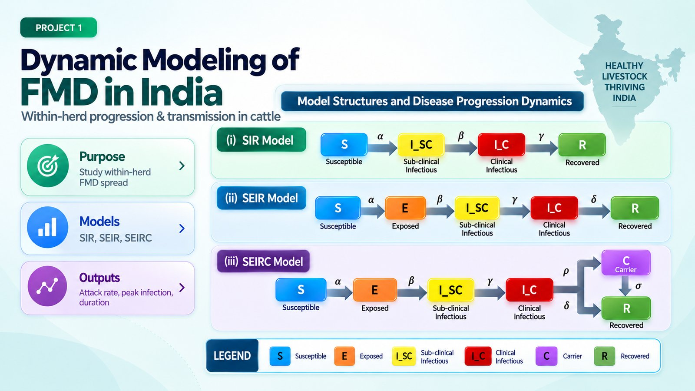
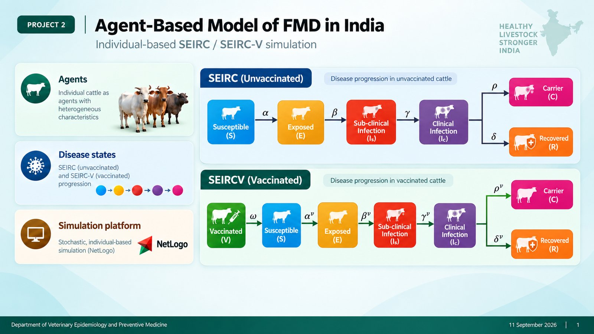
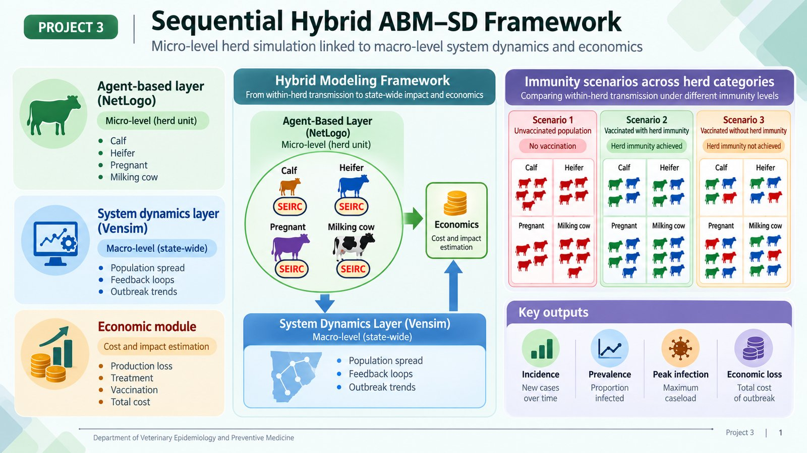
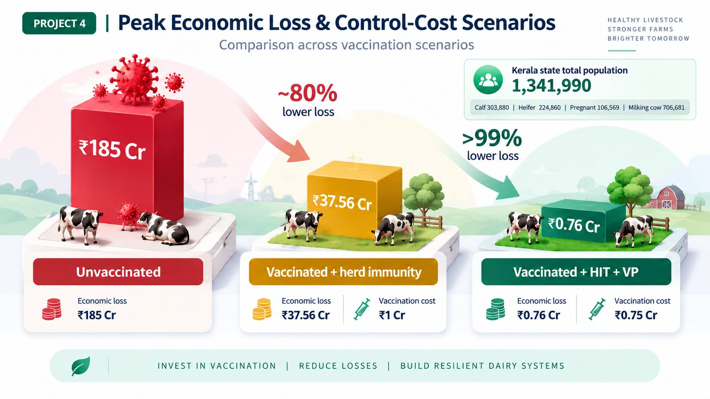
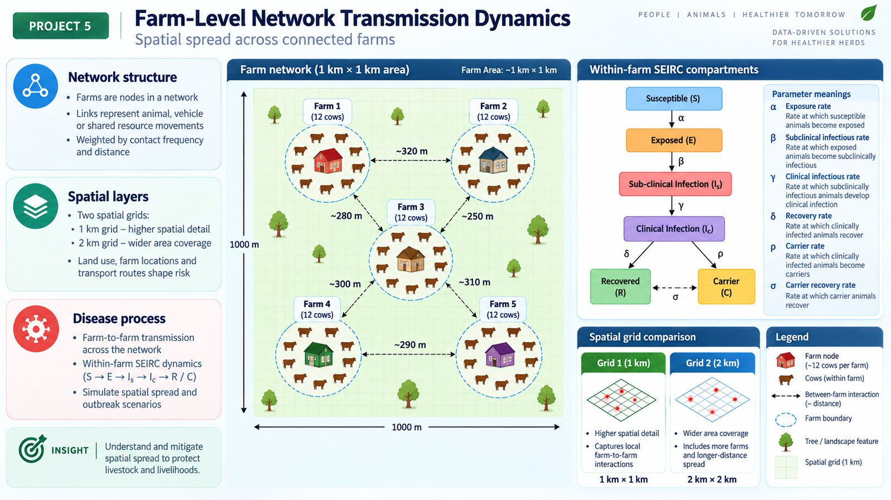

Saby C. Sebastian
PhD Candidate — Department of Veterinary Epidemiology and Preventive Medicine, KVASU, India
Saby C. Sebastian
PhD Candidate – Department of Veterinary Epidemiology and Preventive Medicine, KVASU, India
Saby is a Ph.D. candidate in the Department of Veterinary Epidemiology and Preventive Medicine at Kerala Veterinary and Animal Sciences University (KVASU), India, collaborating with the AISLS Lab on modeling the dynamics and economic impact of Foot-and-Mouth Disease (FMD) in Indian cattle.
Her work spans compartmental and agent-based epidemiological models, a hybrid ABM–system dynamics framework, and farm-level network transmission analysis, linking within-herd disease progression to state-wide vaccination policy and economic impact.
Projects

Compartmental Modeling of Foot-and-Mouth Disease in India
SIR, SEIR, and SEIRC compartmental models capturing within-herd progression and transmission of Foot-and-Mouth Disease in Indian cattle.

Agent-Based Model of FMD Vaccination Strategies
An individual-based NetLogo simulation modeling FMD transmission and comparing control, prophylactic, ring, and barrier vaccination strategies at the herd level.

Sequential Hybrid ABM–SD Framework for FMD
Links a micro-level NetLogo agent-based herd simulation to a macro-level Vensim system dynamics model and economic module, estimating state-wide FMD spread and total outbreak cost.

Economic Loss Model for FMD in Kerala Dairy Herds
Quantifies economic losses and vaccination control costs of FMD across Kerala's dairy herds, comparing unvaccinated, herd-immunity, and full-coverage vaccination scenarios.

Farm-Level Network Transmission Dynamics of FMD
Models spatial spread of FMD across a network of connected farms using within-farm SEIRC compartments and between-farm contact networks at 1 km and 2 km spatial grids.